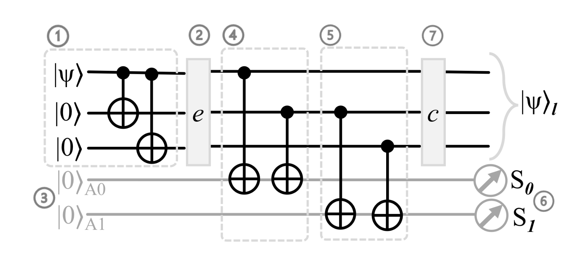

Level 5 - Master Challenge! Bit-flip Error Detection and Correction
Q1 = (X1,Z1)
Q2 = (X2,Z2)
Q3 = (X3,Z3)
Q4 = (X4,Z4)
Q5 = (X5,Z5)
Exc.X(Q1) = 0, Exc.Z(Q1) = 1
Exc.X(Q2) = 0, Exc.Z(Q2) = 1
Exc.X(Q3) = 0, Exc.Z(Q3) = 1
Exc.X(Q4) = 0, Exc.Z(Q4) = 1
Exc.X(Q5) = 0, Exc.Z(Q5) = 1
Game Area
t = 0
Text Content
Master Challenge - Bit-flip Error Detection and Correction
In the process of quantum communication, qubits(Q1, Q2, Q3) are easily affected by the environment, which may cause the bit-flip error. (e.g. Q1 is flipped to |1>)
By applying extra qubits(Q4, Q5) to detect which qubit has been flipped, and do the correction to flip back the error qubit.
"σxⁱ、σxʲ、σxᵏ" are error pauli X gates with unknown i, j, k.
This simulation indicates that if one of the qubits(Q1, Q2, Q3) is flipped, how can we apply Q4 and Q5 to detect the redundant flipped information.
The CNOT gate is a useful tool to disperse one qubit's information to another qubit.
After the error happens(σxⁱ、σxʲ、σxᵏ are activated), CNOT gates can also be used to disperse the flipped information to Q4 and Q5 for detection.
The measurement of Q4 and Q5 can be used to detect which qubit is flipped.
The correction can be done by applying the same gate to the error qubit.
Hadamard gate may not be necessary for this simulation.
Before the error happens, information of Q1, Q2, Q3 should be dispersed with each other.
After the error happens, apply CNOT gates to disperse the error informations(i, j ,k) to Q4 and Q5. The circuit should be similar to the figure below.

Chatterjee, A., Phalak, K., & Ghosh, S. (2023). Quantum Error Correction For Dummies (arXiv:2304.08678 [quant‑ph]).
Now using "σx" gates to do correction based on the results of "M4" & "M5". The Q1, Q2, Q3 should have 0 and 1 expectation values of X and Z.